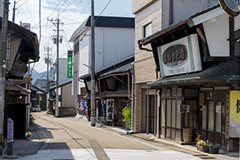

ま ： 魔よけの猪の目 越前箪笥
一言でいうと？
魔よけの「猪の目」が特徴な伝統工芸品のタンス

越前市や鯖江市で作られる、材木を鉄製金具や漆塗りで装飾しているタンスです。
2013年には越前打刃物、越前和紙に続いて3品目となる伝統的工芸品に指定されました。
どんなタンス？
使いこむほど味わい深い風合いと重厚感
越前指物(さしもの)という、板と板や棒などを、釘を使わずに指し合わせる技法を使った製品です。
耐久性に優(すぐ)れ、硬くて木目が美しいケヤキと、湿気を通さず割れや狂いが少ないために高級タンスの材料として重宝(ちょうほう)されてきたキリを主に使っています。
使いこむほど味わい深い風合いと重厚感があります。からくりがあるタンスもあるそうですよ！
猪の目(いのめ)とは？
魔よけの役目をしているハート型の金具
猪の目とは名前のとおり猪(イノシシ)の目のこと。
タンスの角につけられる金具で、魔よけの意味がこめられています。越前箪笥の特徴です。
他にもフチのもくもくと雲のようになっている部分を「雲」といい、いいことがある前兆の雲を表しています。
越前箪笥の町がある？
タンス町通り

国道365線沿いの中村病院から西へ向かう、約200メートルの道を「タンス町通り」といいます。
江戸時代後期から木工技術を持つ職人が多く住み、町は嫁入り道具を求める人でにぎわいました。
今は和洋家具の製造販売業者や建具商が10数軒集まっています。
重厚感のあるタンスはかっこいいですよね。嫁入り道具だったこともありますが、金具がハート型や雲型でかわいらしい様子から、女性に人気だったことも納得です。私も1つ欲しくなってきました～